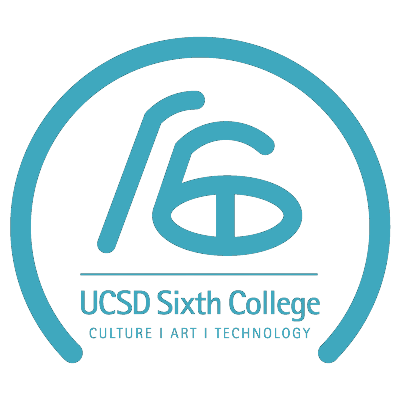

Born from Taiwan and immgrated to United State in 2007. Become a citizen in 2017.
Went to Monte San Jacinto Community College before getting accepted at UCSD. Graduated in Fall
2020 at UCSD with a B.S in Computer Science. I enjoy animations, action movies, and anything that has a heart-warming story.
As of now, I don't have a hobby that I do consistenly, but I enjoy trying new things that I find interesting like writing out
an algorithm, learning a new language, or reading light novel about an adventure.

I studied a variety of fields in computer science at UCSD. Aside from the required courses, I have taken classes in
computer graphic, database, machine learning, and computer network, thus, granting me some experience in the
programming language used in perspecitve field like SQL, python, C++, and golang. However, C++ was my first
programming language and the language I used the most for the past 4 years. I enjoy solving problems and
learning new technology that allows me to create a better result for my work.